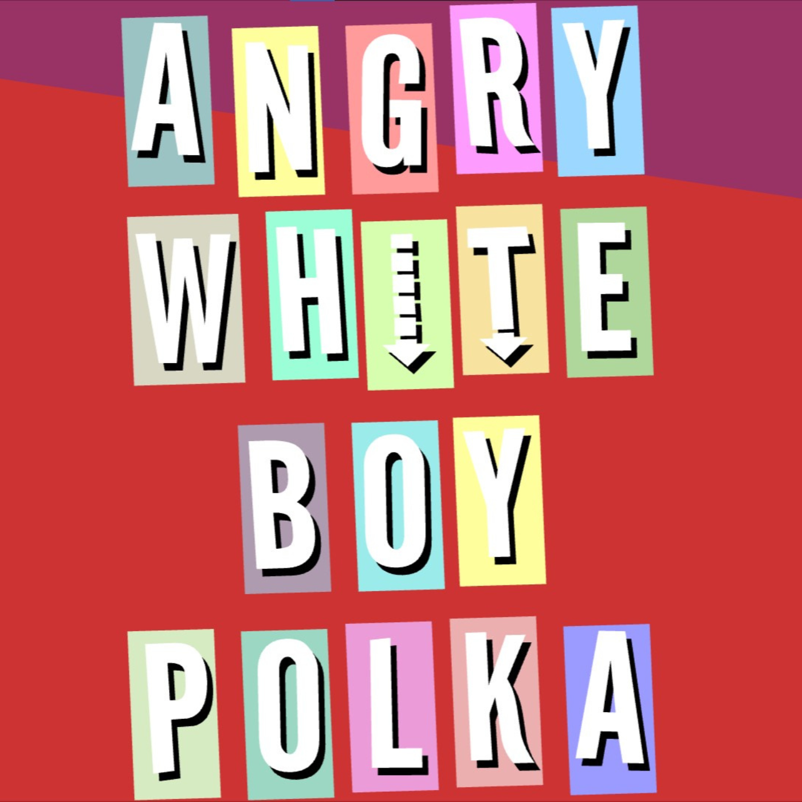

“Angry White Boy Polka” é a nona medley de polca gravada por “Weird Al” Yankovic e aparece no álbum Poodle Hat, lançado em 2003. A faixa reúne trechos de sucessos do início dos anos 2000, originalmente pertencentes a estilos como nu metal, rap metal, rock alternativo e rap, transformando suas sonoridades intensas em uma versão acelerada e bem-humorada no ritmo tradicional da polca.
Segundo Yankovic, a seleção das músicas foi baseada na ideia de escolher canções que soariam especialmente absurdas quando tocadas como polca. O medley reflete a popularidade, naquele período, de bandas e artistas associados a músicas agressivas, vocais intensos e letras cheias de atitude. O título faz referência ao perfil de boa parte dos artistas incluídos, embora a seleção também conte com músicos de diferentes origens e mulheres, como Meg White, do The White Stripes.
A medley inclui trechos de 13 músicas: “Last Resort”, do Papa Roach; “Chop Suey!”, do System of a Down; “Get Free”, do The Vines; “Hate to Say I Told You So”, do The Hives; “Fell in Love with a Girl”, do The White Stripes; “Last Nite”, do The Strokes; “Down with the Sickness”, do Disturbed; “Renegades of Funk”, do Rage Against the Machine; “My Way”, do Limp Bizkit; “Outside”, do Staind; “Bawitdaba”, do Kid Rock; “Youth of the Nation”, do P.O.D.; e “The Real Slim Shady”, do Eminem. Yankovic também pretendia incluir “Freak on a Leash”, do Korn, mas a banda não autorizou o uso da música.
Como em outras medleys de polca do artista, “Angry White Boy Polka” combina mudanças rápidas entre diferentes canções, criando um contraste cômico entre o ritmo alegre da polca e a energia pesada das gravações originais. A faixa termina com o tradicional trecho de “Shave and a Haircut”, encerramento que apareceu pela última vez em uma medley de polca de Yankovic nesta gravação.
[LAST RESORT (Papa Roach)]
Cut my life into pieces
This is my last resort, suffocation, no breathing
Don't give a... if I cut my arm bleeding
This is my last resort
'Cause I'm losing my sight, losing my mind
Wish somebody would tell me I'm fine
Losing my sight, losing my mind
Wish somebody would tell me I'm fine
Nothing's alright, nothing is fine
I'm running and a-crying
[CHOP SUEY! (System Of A Down)]
Wake up! (Wake up)
Grab a brush and put a little make-up
Hide the scars to fade away the shakeup
(Hide the scars to fade away the shakeup)
Why'd you leave the keys upon the table?
Here you go create another fable
You wanted to
Grab a brush and put a little makeup
You wanted to
Hide the scars to fade away the shakeup
You wanted to
Why'd you leave the keys upon the table?
You wanted to
I don't think you trust
In my self-righteous suicide
I cry when angels deserve to die, die, die
D-d-die die die die die
Hey!
[GET FREE (The Vines)]
I'm gonna get free
I'm gonna get free
I'm gonna get free
Ride into the sun
She never loved me
She never loved me
She never loved me
Why should anyone?
(Come here, come here, come here)
I'll take your photo for ya
(Come here, come here, come here)
Drive you around the corner
(Come here, come here, come here)
You know you really oughta
(Come here, come here, come here)
Move out to California*
[HATE TO SAY I TOLD YOU SO (The Hives)]
Do what I want 'cause I can, if I don't because I wanna
Be ignored by the stiff and the bored because I'm gonna
Hate to say I told you so, alright
Do believe I told you so
Now it's all out and you knew
'Cause I wanted to
[FELL IN LOVE WITH A GIRL (The White Stripes)]
Fell in love with a girl
I fell in love at once and almost completely
She's in love with the world
But sometimes these feelings can be so misleading
Can't think of anything to do
Yeah, my left brain knows that all love is fleeting
She's just looking for something new
Yeah, I said it once before but it bears repeating, now
[LAST NITE (The Strokes)]
Last night
She said
"Oh baby, don't you feel so down
When you turn me off
When I feel left out"
So I (what'd you do?)
Well, I turned around (right around)
"Oh, baby, gonna be alright"
It was a great big lie (big old lie)
'Cause I left that night
Yeah
[DOWN WITH THE SICKNESS (Disturbed)]
Ooh ah ah ah ah!
Ooh ah ah ah ah!
Get up
Come on get down with the sickness
Get up
Come on get down with the sickness
Get up
Come on get down with the sickness
Open up your hate, and let it flow into me
Get up
Come on get down with the sickness
You mother get up
Come on get down with the sickness
Get up!
Come on get down with the sickness
Madness is the gift that has been given to me
[RENEGADES OF FUNK (Rage Against The Machine)]
We're the renegades of funk, we're the renegades of funk
We're the renegades of funk, we're the renegades of funk
[MY WAY (Limp Bizkit)]
This time I'm a let it all come out
This time I'm a stand up and shout
I'm a do things my way
It's my way
My way or the highway
This time I'm a let it all come out
This time I'm a stand up and shout
I'm a do things my way
It's my way
...or the highway
[OUTSIDE (Staind)]
But I'm on the outside
I'm looking in
I can see through you
See your true colors
'Cause inside you're ugly
Ugly like me
I can see through you
See to the real you
[BAWITDABA (Kid Rock)]
Bawitdaba da bang da dang diggy diggy
Diggy said the boogie said up jump the boogie
Bawitdaba da bang da dang diggy diggy
Diggy said the boogie said up jump the boogie
[YOUTH OF THE NATION (P.O.D.)]
We are, we are
The youth of the nation
We are, we are
The youth of the nation
We are, we are
The youth of the nation
We are the youth of the nation!
Hey!
[THE REAL SLIM SHADY (Eminem)]
I'm Slim Shady, yes I'm the real Shady
All you other Slim Shadys are just imitating
So won't the real Slim Shady please stand up
Please stand up, please stand up
I'm Slim Shady, yes I'm the real Shady
All you other Slim Shadys are just imitating
So won't the real Slim Shady please, please
Please stand up
Slim Shady won't you please stand up?
(Stand up Shady)(Stand up)
(Stand up Shady)(Stand up)
(Stand up Shady)
Shady won't you please stand up?
Hey!